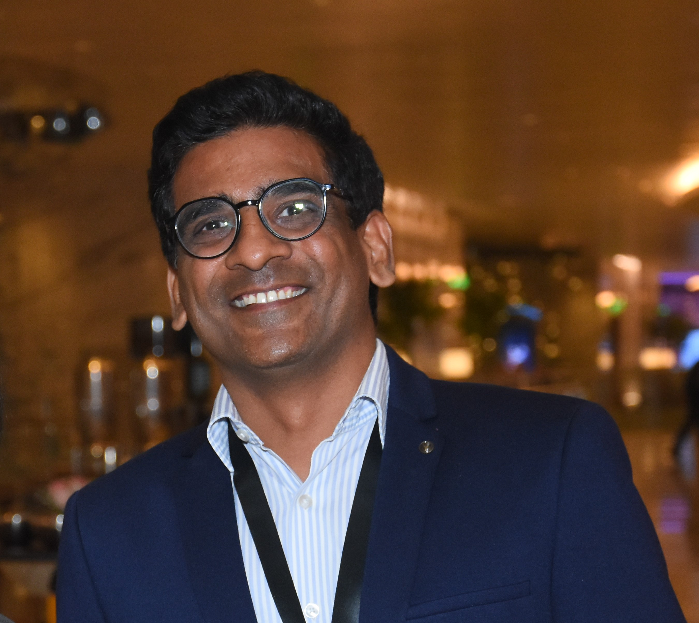

The Story So Far
About Nitin

I am a lifelong learner with over 24 years of experience in the Information Technology industry, having spent my career navigating product-based, consulting, and global service organizations.
At my core, I am a curious explorer. I believe that learning should feel like a discovery, not an effort. I love the challenge of breaking down complex, intimidating ideas into simple, relatable stories that spark curiosity and make technology feel approachable for everyone.
My academic journey has been a blend of logic and leadership. With a Master’s in Computers & Management and my current pursuit of a Ph.D., I am constantly looking for the "why" behind the "how."
Lately, I’ve been fascinated by the intersection of creativity and technology—specifically how digital transformation and Artificial Intelligence are reshaping our world.